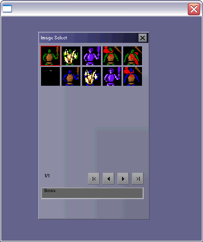

| << Spis Strona g³ówna |
Irrlicht generalnie jest silnikiem 3D, ale umo¿liwia te¿ stworzenie prostego interfejsu graficznego. Zaimplementowane s¹ wszystkie podstawowe kontrolki znane z Windows. Co prawda ich funkcjonalnoœæ niekiedy pozostawia sporo do ¿yczenia, niemniej s¹ i do prostych zastosowañ w zupe³noœci wystarcz¹. A jeœli nie wystarcz¹... W tym artykule postaram siê omówiæ rozszerzanie tego prostego GUI o w³asne kontrolki lub te¿ dodatkowe cechy dla kontrolek ju¿ istniej¹cych.
Zanim jednak zabierzemy siê do dzie³a, przypomnijmy sobie krótko, jak w ogóle odpaliæ najprostsz¹ aplikacjê wykorzystuj¹c¹ Irrlichta. Zak³adamy, ¿e biblioteka jest ju¿ zainstalowana. Jeœli korzystamy ze œrodowiska Visual C++, dobrym pomys³em bêdzie dodanie do naszej solucji ca³ego projektu z kodem Ÿród³owym Irrlichta. Bêdzie pod rêk¹ - przyda siê jako œci¹gawka lub nawet Ÿrod³o gotowych fragmentów kodu.
Przede wszystkim do³¹czamy odpowiedni nag³ówek:
#include <irrlicht.h>
Irrlicht intensywnie korzysta z przestrzeni nazw, wiêc by u³atwiæ sobie ¿ycie, napiszmy:
using namespace irr;
using namespace core;
using namespace scene;
using namespace video;
using namespace io;
using namespace gui;
Nie zapominamy o dolinkowaniu biblioteki. Aby nie grzebaæ siê w licznych zak³adkach z opcjami, robimy tak:
#pragma comment(lib, "Irrlicht.lib")
Trzeba jeszcze zapewniæ dostêp do pliku Irrlicht.dll. Najproœciej umieœciæ go w folderze systemowym (np. c:\windows\system32\), wtedy bêdzie dostêpny dla wszystkich aplikacji. Mo¿na te¿ wrzuciæ go tam, gdzie ma byæ nasza aplikacja.
Irrlicht to biblioteka wieloplatformowa, dlatego nawet jeœli piszemy pod Windows, nie umieszczamy naszego kodu w funkcji WinMain, tylko w "starym dobrym" main. Pierwsz¹ rzecz¹, któr¹ musimy zrobiæ, jest utworzenie g³ównego urz¹dzenia Irrlichta:
int main()
{
IrrlichtDevice *device =
createDevice (EDT_SOFTWARE2, dimension2d<s32>(640, 480), 16,
false, false, false, 0);
Powy¿szy kod odpala nasz¹ aplikacjê w oknie, ustawiaj¹c zarazem wybrany tryb graficzny. U¿ywamy jednego z dwóch dostêpnych rendererów software'owych. Moglibyœmy oczywiœcie wyœwietlaæ grafikê za pomoc¹ DirectX czy OpenGL, ale do zrobienia dwuwymiarowego GUI nie jest nam to potrzebne, tym bardziej ¿e autorowi tego artyku³u nie chce siê dodatkowo poruszaæ zagadnieñ instalacji tych bibliotek ;-).
Pierwszy tutorial Irrlichta, z którego w³aœnie bezczelnie kopiujemy kod, robi jeszcze kilka innych ciekawych rzeczy, ale nam one s¹ niepotrzebne. Chcemy tylko jak najszybciej przebrn¹æ przez podstawy. Na szczêœcie nie zosta³o ich ju¿ wiele. Przede wszystkim potrzebujemy jeszcze g³ównej pêtli. Robimy j¹ tak:
IVideoDriver* driver = device->getVideoDriver();
IGUIEnvironment* guienv = device->getGUIEnvironment();
while(device->run())
{
driver->beginScene(true, true, SColor(255,100,101,140));
guienv->drawAll();
driver->endScene();
}
Pierwsza linijka pobiera wskaŸnik do interfejsu sterownika karty graficznej. Obiekt ten jest nam potrzebny do renderowania sceny. Tutaj oczywiœcie nie mamy sceny z prawdziwego zdarzenia, aczkolwiek jeœli chcemy cokolwiek narysowaæ na ekranie (a chcemy), musimy zrobiæ to miêdzy wywo³aniami beginScene() a endScene(). Druga linijka pobiera w podobny sposób wskaŸnik do œrodowiska GUI. Ten wskaŸnik potrzebny jest nam na razie tylko do wywo³ania drawAll(). Zapamiêtaj tê metodê, gdy¿ jej zadaniem jest rysowanie wszelkich elementów GUI - jeœli jej nie wywo³amy, nic siê nie poka¿e na ekranie (oprócz naszego g³ównego okienka, które tak naprawdê jest rysowane przez system operacyjny, nie przez Irrlichta).
Ostatnimi czynnoœciami które musimy wykonaæ by nasz¹ aplikacyjkê pobudziæ do ¿ycia (a w³aœciwie to wrêcz przeciwnie ;-)) jest zniszczenie urz¹dzenia Irrlichta i tradycyjne zwrócenie 0. Oczywiœcie dzieje siê to po wyjœciu z g³ównej pêtli, co w naszym przypadku mo¿e nast¹piæ tylko po zamkniêciu g³ównego okna:
device->drop();
return 0;
}
To wszystko, mamy szkielet aplikacji. Teraz przyst¹pimy do w³aœciwej zabawy, czyli tworzenia w³asnej kontrolki. W naszym przyk³adzie bêdzie to obiekt wyœwietlaj¹cy w kilku rzêdach ikony i pozwalaj¹cy wybraæ jedn¹ z nich.
Poniewa¿ Irrlicht jest napisany obiektowo, nasza kontrolka bêdzie mia³a swoj¹ klasê. Dlatego te¿ tworzymy dla niej nowy plik Ÿród³owy i plik nag³ówkowy. Klasê nazwiemy, wzoruj¹c siê na nazwach klas Irrlichta, CGUIImageSelect. Dobrym zwyczajem jest nazywanie plików tak samo, jak klasê - a wiêc u nas CGUIImageSelect.cpp i CGUIImageSelect.h.
Przegl¹daj¹c Ÿród³a Irrlichta mo¿emy zauwa¿yæ, i¿ kontrolki sk³adaj¹ siê zazwyczaj z trzech plików. "W³aœciwy" plik nag³ówkowy jest przechowywany w tym samym folderze, co plik CPP, natomiast "upubliczniony" (w folderze \include) jest drugi plik nag³ówkowy, na przyk³ad IGUIButton.h. W plikach takich znajduj¹ siê tak zwane interfejsy klas. S¹ to klasy abstrakcyjne, same w sobie bezu¿yteczne, ale dziedzicz¹ po nich "w³aœciwe" klasy kontrolek. Irrlicht nie zawiera w gruncie rzeczy na tyle du¿o kontrolek, aby ta koncepcja dawa³a nam jakiekolwiek korzyœci, dlatego nie bêdziemy jej stosowali dla naszej nowej kontrolki. W przypadku gdybyœmy mieli kilka bardzo podobnych kontrolek i chcielibyœmy im zapewniæ ten sam interfejs (lub czêœæ interfejsu), takie rozwi¹zanie mog³oby nam to nieco u³atwiæ.
Zacznijmy od pliku nag³ówkowego. Jego pocz¹tek mo¿e wygl¹daæ tak:
#ifndef __C_GUI_IMAGE_SELECT_H_INCLUDED__
#define __C_GUI_IMAGE_SELECT_H_INCLUDED__
#include <Irrlicht.h>
#include "GUIIcons.h"
namespace irr
{
namespace gui
{
Po co w³¹czamy GUIIcons.h - zaraz siê dowiemy. Na razie zwróæmy tylko uwagê, ¿e otwieramy przestrzeñ nazw irr::gui. W przestrzeni tej znajduj¹ siê w Irrlichcie wszystkie rzeczy zwi¹zane z GUI, wiêc naturalne jest, ¿e i nasza kontrolka tam bêdzie. Dziêki temu bêdziemy mieli ³atwiejszy dostêp do ró¿nych potrzebnych typów danych, sta³ych itp.
Warto dodaæ, ¿e plik GUIIcons.h znajduje siê w folderze ze Ÿrod³ami Irrlichta. Jeœli nie mamy tych Ÿróde³, musimy podaæ do niego jawnie œcie¿kê albo skopiowaæ ten plik do folderu z nasz¹ aplikacj¹.
Ka¿da kontrolka powinna dziedziczyæ - poœrednio lub bezpoœrednio - po IGUIElement. Zapewni nam to podstawow¹ funkcjonalnoœæ, wspóln¹ dla wszystkich kontrolek Irrlichta. Warto zajrzeæ do pliku IGUIElement.h i przekonaæ siê, jaka to funkcjonalnoœæ. Dowiemy siê przy okazji, ¿e klasa IGUIElement dziedziczy po IUnknown (co zapewnia naszej kontrolce mechanizm zliczania referencji - bêdzie mo¿na tworzyæ dynamicznie obiekty naszej klasy nie martwi¹c siê o ich zwalnianie) oraz po IEventReceiver (co zapewni naszej kontrolce odbieranie komunikatów od œrodowiska GUI).
class CGUIImageSelect : public IGUIElement
{
Mamy wiêc ju¿ dzia³aj¹c¹ kontrolkê, która jednak niewiele potrafi. Zaraz to zmienimy. Zajmijmy siê najpierw sekcj¹ chronion¹ naszej klasy:
protected:
struct TImgInfo
{
video::ITexture* img;
core::rect<s32> clip;
core::stringw name;
};
static IrrlichtDevice *m_pDevice;
u32 m_RowCount;
u32 m_ColCount;
u32 m_Selected;
u32 m_ImgWidth;
u32 m_ImgHeight;
u32 m_Spacing;
u32 m_Page;
u32 m_NumPages;
core::array <TImgInfo> m_ImgList;
IGUIStaticText *m_lblTip, *m_lblPage;
IGUIButton *m_btnPrev, *m_btnNext, *m_btnFrst, *m_btnLast;
Co my tu mamy? Po pierwsze, struktura TImgInfo. Bêdzie ona przechowywa³a informacjê o pojedynczej ikonie. Zawiera wskaŸnik na odpowiedni¹ bitmapê (w Irrlichcie wszystkie bitmapy przechowywane s¹ w³aœciwie jako tekstury, co jednak wcale nam nie przeszkadza - musimy tylko pamiêtaæ, jeœli mamy jedn¹ ze starszych wersji silnika, by wymiary bitmapy by³y potêg¹ dwójki, np 256x512), informacjê o kadrze (czyli wskazówkê, gdzie w bitmapie znajduje siê nasza ikonka) oraz stringa z nazw¹ ikonki (bêdzie ona wyœwietlana pod wszystkimi ikonami, gdy u¿ytkownik wska¿e dan¹ ikonkê mysz¹).
Druga rzecz to statyczny wskaŸnik na urz¹dzenie Irrlichta. Potrzebujemy go miêdzy innymi po to, by uzyskaæ dostêp do œrodowiska GUI, które zarz¹dza wszystkimi kontrolkami. WskaŸnik ten bêdzie inicjalizowany w (równie¿ statycznej) funkcji Init. Oznacza to, ¿e osoba korzystaj¹ca z naszej kontrolki bêdzie musia³a wywo³aæ nasz¹ funkcjê Init() zanim stworzy jak¹kolwiek kontrolkê klasy CGUIImageSelect.
Nastêpna seria zmiennych sk³adowych (wszystkie maj¹ przedrostek "m_", od "member" - bardzo dobry zwyczaj) przechowuje informacje o stanie kontrolki. Odpowiednio: liczba rzêdów ikon, liczba kolumn (obie s¹ ustawiane w konstruktorze i nie mo¿na ich ju¿ póŸniej zmieniæ), indeks aktualnie wybranej ikonki, wymiary ikonki (a wiêc wszystkie ikony musz¹ byæ tego samego rozmiaru), odstêp miêdzy ikonami w pionie i w poziomie (nie jest ustawiany w konstruktorze, ale mo¿na go zmieniæ w ka¿dej chwili wywo³uj¹c odpowiedni¹ metodê, pomówimy o niej póŸniej).
Kolejne dwie zmienne to: aktualna strona (m_Page) i liczba wszystkich stron (m_NumPages). Nasza kontrolka bowiem bêdzie mog³a wyœwietliæ naraz tylko tyle ikon, ile okreœli³ u¿ytkownik, podaj¹c w konstruktorze wartoœci do m_RowCount i m_ColCount. Jednak dodamy te¿ przyciski, umo¿liwiaj¹c wyœwietlenie pozosta³ych ikon (jeœli oczywiœcie jest ich wiêcej, ni¿ mieœci siê za jednym razem) na nastêpnych stronach.
Dalej mamy tablicê m_ImgList, w której trzymamy informacjê o naszych ikonach. Szablon core::array pochodzi z Irrlichta, zastêpuj¹c standardowe konstrukcje z STL, które ponoæ ponoæ powoduj¹ jakieœ tam problemy (w co autor niniejszego artyku³u pozwala sobie nie wierzyæ, aczkolwiek nie ma nic przeciwko zastosowaniu tutaj klasy core::array, co robi siê dok³adnie tak samo, jak na przyk³ad z klas¹ std::vector).
Reszta zmiennych sk³adowych to wskaŸniki na kontrolki ju¿ w Irrlichcie istniej¹ce - IGUIStaticText i IGUIButton. Nic bowiem nie stoi na przeszkodzie, by wykorzystaæ je do naszych celów. O roli przycisków ju¿ sobie powiedzieliœmy, natomiast co do etykietek: m_lblTip bêdzie wyœwietlaæ "podpowiedzi" do poszczególnych ikonek (zawartoœæ zmiennej name struktury TImgInfo), zaœ m_lblPage - numer aktualnej strony.
W sekcji protected pozosta³y nam jeszcze dwie deklaracje:
void RefreshLabel (void);
void ChangePage (void);
Funkcje te nie musz¹ byæ publiczne, poniewa¿ korzystaæ z nich bêdziemy tylko wewnêtrznie, a co dok³adnie bêd¹ robiæ - dowiemy siê w swoim czasie. Na razie przejdŸmy do sekcji publicznej:
public:
CGUIImageSelect (IGUIElement* parent, core::rect<s32> rect, u32 cols, u32 rows, u32 img_w, u32 img_h, s32 id = -1);
Konstruktor przede wszystkim musi zainicjalizowaæ niektóre zmienne z klasy bazowej IGUIElement. Chodzi oczywiœcie o wskaŸnik na rodzica, prostok¹t wyznaczaj¹cy obszar zajmowany przez nasz¹ kontrolkê oraz jej identyfikator. Wszystkie pozosta³e argumenty konstruktora inicjalizuj¹ "nasze w³asne" zmienne - czyli te, które deklarujemy ju¿ w klasie CGUIImageSelect.
Funkcjê Init() ju¿ wymieniliœmy; wiemy te¿, czym siê zajmuje:
static void Init (IrrlichtDevice* dev);
Wiêcej do powiedzenia jest o dwóch bardzo wa¿nych funkcjach wirtualnych, OnEvent() i draw(). Wirtualnych, czyli zadeklarowanych pierwotnie w klasie bazowej IGUIElement:
virtual bool OnEvent (SEvent event);
virtual void draw (void);
Zredefiniowanie ich umo¿liwi nam rozbudowê funkcjonalnoœci dziedziczonej po IGUIElement. Do OnEvent() bêd¹ trafiaæ wszystkie "surowe" komunikaty od œrodowiska GUI (zdarzenia myszy i klawiatury), a tak¿e te "bardziej z³o¿one", jak komunikaty od naszych sk³adowych kontrolek (czyli owych czterech przycisków). Tam te¿ bêdziemy je przekszta³caæ w nasze w³asne eventy. Natomiast metoda draw(), jak sama nazwa wskazuje, zajmie siê rysowaniem kontrolki.
Pozostaje jeszcze garœæ metod specyficznych dla naszej kontrolki. Zaprezentujemy teraz tylko ich sygnatury, szczegó³y zostawimy na moment, gdy zajmiemy siê ich implementacj¹:
void AddImage (video::ITexture* img, const rect<s32>& clip, const core::stringw img_name = L"");
void RemoveAllImages (void);
void SetSpacing (u32 spacing);
u32 GetSpacing (void);
void SetSelected (u32 index);
void SetSelected (u32 column, u32 row);
u32 GetSelected (void);
u32 GetPage (void);
void SetPage (u32 page);
Na koniec deklarujemy typ wyliczeniowy, który umo¿liwi nam rozró¿nianie komunikatów GUI, które bêdzie nasza kontrolka generowaæ:
enum EIMGS_EVENT_TYPE
{
EET_IMAGE_SELECT_EVENT = EET_USER_EVENT + 1,
EIMGS_SEL_CHANGED = EGET_COMBO_BOX_CHANGED + 1,
EIMGS_PAGE_CHANGED,
EIMGS_EVENT_TYPE_COUNT
};
} // end namespace gui
} // end namespace irr
#endif
Pierwszego elementu wyliczenia, EET_IMAGE_SELECT_EVENT, bêdziemy u¿ywaæ dla oznaczenia wszelkich zdarzeñ generowanych w naszej kontrolce. Natomiast nastêpne dwie sta³e, EIMGS_SEL_CHANGED i EIMGS_PAGE_CHANGED identyfikuj¹ dok³adniej rodzaj zdarzenia (odpowiednio: zaznaczenie ikony i zmiana wyœwietlanej strony). Ostatnia wartoœæ EIMGS_EVENT_TYPE_COUNT nie jest u¿ywana, ale gdybyœmy stworzyli inn¹ now¹ kontrolkê, moglibyœmy u¿yæ tej wartoœci by wiedzieæ, jakich wartoœci mo¿emy u¿yæ w tej nowej kontrolce, by unikn¹æ konfliktu ze "star¹". Autorzy Irrlichta tego nie uczynili, dlatego musimy stosowaæ ten wybieg z EGET_COMBO_BOX_CHANGED (nie wygl¹da to zbyt elegancko, bo przecie¿ nasza kontrolka z ComboBox-em nie ma zbyt wiele wspólnego).
Pora zaimplementowaæ to wszystko. Przede wszystkim w³¹czamy nasz nag³ówek, otwieramy przestrzeñ nazw i definiujemy sta³¹ m_mDevice, o której ju¿ mówiliœmy:
#include "CGUIImageSelect.h"
namespace irr
{
namespace gui
{
IrrlichtDevice *CGUIImageSelect::m_pDevice = 0;
Nieco wiêcej pisaniny mamy z konstruktorem, który musi ustawiæ sporo zmiennych. Przede wszystkim przekazujemy odpowiednie wartoœci do klasy bazowej. Wspomnieliœmy o trzech, dwie pozosta³e to EGUIET_ELEMENT (typ kontrolki; wszystkie kontrolki zdefiniowane przez u¿ytkownika (czyli przez nas) autorzy silnika zalecaj¹ oznaczaæ w³aœnie t¹ sta³¹, co te¿ czynimy) oraz wskaŸnik na œrodowisko GUI, który otrzymujemy, wywo³uj¹c metodê getGUIEnvironment() dla g³ównego urz¹dzenia, na które ju¿ mamy statyczny wskaŸnik.
Pierwsza linijka cia³a konstruktora istnieje tylko dla skrócenia zapisu - wskaŸnik na œrodowisko GUI przechowywany jest przez klasê bazow¹ w zmiennej Environment - strasznie d³ugie s³owo i trudne ;-). Skracamy je sobie do env:
CGUIImageSelect::CGUIImageSelect (IGUIElement* parent, core::rect<s32> rect, u32 cols, u32 rows, u32 img_w, u32 img_h, s32 id
/*= -1*/)
: IGUIElement(EGUIET_ELEMENT, m_pDevice->getGUIEnvironment(), parent, id, rect)
{
IGUIEnvironment *env = Environment;
m_RowCount = (rows > 0) ? rows : 1;
m_ColCount = (cols > 0) ? cols : 1;
m_ImgWidth = img_w;
m_ImgHeight = img_h;
m_Selected = 0;
m_Page = 0;
m_NumPages = 0;
m_Spacing = 0;
Zerowania czy inicjalizacji zmiennych nie trzeba raczej omawiaæ. Wiêkszym problemem mo¿e siê okazaæ stworzenie "podkontrolek", czyli naszych dwóch etykiet i czterech przycisków. Nie narzekajmy jednak, w WinAPI by³oby to jeszcze trudniejsze ;-). Do dzie³a:
m_lblTip = env->addStaticText (L"", core::rect<s32>(5, rect.LowerRightCorner.Y - 80, 5 + rect.LowerRightCorner.X-
rect.UpperLeftCorner.X - 10, rect.LowerRightCorner.Y - 80 + 20), false, true, this, -1, false);
m_lblPage = env->addStaticText (L"", core::rect<s32>(5, rect.LowerRightCorner.Y - 105, 5 + rect.LowerRightCorner.X-
rect.UpperLeftCorner.X - 10, rect.LowerRightCorner.Y - 105 + 20), false, true, this, -1, false);
m_btnFrst = env->addButton (core::rect<s32>(rect.LowerRightCorner.X - 100, rect.LowerRightCorner.Y - 105,
rect.LowerRightCorner.X - 100 + 20, rect.LowerRightCorner.Y - 105 + 20), this, -1, L"|<");
m_btnPrev = env->addButton (core::rect<s32>(rect.LowerRightCorner.X - 75, rect.LowerRightCorner.Y - 105,
rect.LowerRightCorner.X - 75 + 20, rect.LowerRightCorner.Y - 105 + 20), this, -1, GUI_ICON_CURSOR_LEFT);
m_btnNext = env->addButton (core::rect<s32>(rect.LowerRightCorner.X - 50, rect.LowerRightCorner.Y - 105,
rect.LowerRightCorner.X - 50 + 20, rect.LowerRightCorner.Y - 105 + 20), this, -1, GUI_ICON_CURSOR_RIGHT);
m_btnLast = env->addButton (core::rect<s32>(rect.LowerRightCorner.X - 25, rect.LowerRightCorner.Y - 105,
rect.LowerRightCorner.X - 25 + 20, rect.LowerRightCorner.Y - 105 + 20), this, -1, L">|");
Tak, wiem, to wygl¹da strasznie (nie widzieliœcie jeszcze kodu HTML tego fragmentu :D). Có¿ jednak poradziæ na to, ¿e autorzy silnika tak niefrasobliwie podeszli do swojej klasy reprezentuj¹cej prostok¹t? (Notabene kiedyœ myœla³em, ¿e nie da siê stworzyæ bardziej topornego prostok¹ta, ni¿ RECT z WinAPI; myli³em siê, jak widaæ.)
No, doœæ tego marudzenia. Powy¿szy kod nie nale¿y mo¿e do krótkich i czytelnych, ale te¿ nie jest skomplikowany. Jedyn¹ niezrozumia³¹ rzecz¹ mo¿e tu byæ u¿ycie sta³ych: GUI_ICON_CURSOR_LEFT i GUI_ICON_CURSOR_RIGHT w miejscu, gdzie powienien byæ tekst wyœwietlany na przycisku. Otó¿ jest to taka ma³a sztuczka, wykorzystywana przez autorów Irrlichta do rysowania na kontrolkach ró¿nych symboli. My na przyk³ad chcemy mieæ na naszych przyciskach do przewijania stron strza³ki. U¿yte przez nas sta³e zawieraj¹ kody znaków, które wygl¹daj¹ jak strza³ki w³aœnie. Jednak nie musz¹ te znaki wystêpowaæ w ka¿dym zestawie czcionek. Jeœli wiêc chcemy mieæ gwarancjê, ¿e na naszym przycisku wyrysuje siê dok³adnie taki symbol, jaki chcemy, musimy ustawiæ temu przyciskowi wbudowan¹ czcionkê Irrlichta:
m_btnFrst->setOverrideFont (env->getBuiltInFont());
m_btnPrev->setOverrideFont (env->getBuiltInFont());
m_btnNext->setOverrideFont (env->getBuiltInFont());
m_btnLast->setOverrideFont (env->getBuiltInFont());
}
To ju¿ koniec konstruktora. Jednak w³aœciwa zabawa dopiero siê zaczyna. Najpierw - znana ju¿ funkcja Init():
void CGUIImageSelect::Init (IrrlichtDevice* dev)
{
m_pDevice = dev;
}
Du¿o bardziej skomplikowana bêdzie implementacja OnEvent(). Musimy tu okreœliæ, jak nasza kontrolka bêdzie reagowa³a na poczynania u¿ytkownika:
bool CGUIImageSelect::OnEvent (SEvent event)
{
if (event.EventType == EET_MOUSE_INPUT_EVENT)
{
u32 mx, my;
core::rect<s32> rc = this->getAbsolutePosition();
core::position2di pos = rc.UpperLeftCorner;
mx = (event.MouseInput.X - pos.X) / (m_ImgWidth + m_Spacing);
my = (event.MouseInput.Y - pos.Y) / (m_ImgHeight + m_Spacing);
if (event.MouseInput.Event == EMIE_LMOUSE_PRESSED_DOWN)
{
u32 sel = m_Page * m_ColCount * m_RowCount + my * m_ColCount + mx;
if (mx >= m_ColCount || my >= m_RowCount) return true;
if (sel >= m_ImgList.size()) return true;
m_Selected = sel;
SEvent user_event;
user_event.EventType = (EEVENT_TYPE) EET_IMAGE_SELECT_EVENT;
user_event.UserEvent.UserData1 = EIMGS_SEL_CHANGED;
user_event.UserEvent.UserData2 = m_Selected;
Parent->OnEvent (user_event);
}
Wszystkie najbardziej niezbêdne informacje o nadchodz¹cym zdarzeniu mamy w zmiennej event. Przede wszystkim musimy sprawdziæ rodzaj zdarzenia, co te¿ czynimy powy¿ej. Ten akurat fragment kodu przede wszystkim sprawdza, czy mamy do czynienia ze zdarzeniem myszy. Jeœli tak, to przelicza wspó³rzêdne kursora w pikselach na wspó³rzêdne ikonki, nad któr¹ kursor siê znajduje, bior¹c pod uwagê wymiary ikony i odstêpy miêdzy nimi. Jak widaæ, kalkulacja jest uproszczona i najechanie na owe odstêpy pomiêdzy ikonami równie¿ potraktuje jako najechanie na sam¹ ikonê.
Dalej dokonujemy sprawdzenia, jakie dok³adnie zdarzenie nast¹pi³o. Jeœli jest to wciœniêcie lewego przycisku myszy, to wyliczamy numer ikony z obliczonych przed chwil¹ wspó³rzêdnych (mx i my). Sprawdzamy, czy rzeczywiœcie jest tam jakaœ ikona, czy te¿ mo¿e pusta przestrzeñ (co mo¿e siê zdarzyæ, jeœli ikon na stronie jest mniej ni¿ wskazuje iloczyn m_RowCount * m_ColCount). Jeœli tak, przenosimy tam selekcjê (m_Selected).
Nastêpnie generujemy zdarzenie EET_IMAGE_SELECT_EVENT. Poniewa¿ sta³a EET_IMAGE_SELECT_EVENT jest innego typu, ni¿ pole EventType struktury SEvent, musimy dokonaæ konwersji jawnej. Jak wiemy z "lektury" plików nag³ówkowych Irrlichta (co warto uczyniæ, jeœli go rozszerzamy), SEvent jest w³aœciwie uni¹, dziel¹c¹ swój obszar miêdzy kilka struktur, z których ka¿da reprezentuje inne zdarzenie. Zak³adaj¹c, ¿e nie chcemy naruszaæ Ÿróde³ Irrlichta, nie mo¿emy sobie tam dodaæ jakiejœ w³asnej struktury. Na szczêœcie ktoœ o nas pomyœla³ i stworzy³ tam strukturê UserEvent do u¿ytku uniwersalnego. Ma tylko trzy pola (dwa typu s32, czyli int, oraz jedno typu f32, czyli float/double). Pola te zowi¹ siê odpowiednio: UserData1, UserData2 i UserData3. Ma³o tego, ale powinno nam wystarczyæ. Moglibyœmy te¿ grymasiæ, ¿e nazwy pól niezbyt ³adne, no ale co robiæ. Po wype³nieniu wszystkich pól wysy³amy strukturê do rodzica, który nastêpnie przeka¿e j¹ gdzie trzeba (do funkcji OnEvent() aplikacji wykorzystuj¹cej nasz¹ kontrolkê albo do diab³a, w zale¿noœci od sytuacji ;-) ).
Warto w tym miejscu zauwa¿yæ, ¿e nie zapamiêtujemy w naszej strukturze UserEvent wskaŸnika lub identyfikatora kontrolki, która zdarzenie wygenerowa³a. Po prostu zabrak³o nam na to miejsca (przechowywanie wskaŸnika w polu UserData3, które jest typu f32, nie jest zbyt bezpieczne). Przez to mo¿emy albo mieæ tylko jedn¹ kontrolkê CGUIImageSelect w aplikacji, albo w ogóle nie obs³ugiwaæ jej zdarzeñ, bo nie bêdziemy w stanie rozró¿niæ, od którego "egzemplarza" kontrolki pochodz¹.
Oczywiœcie najlepszym rozwi¹zaniem by³oby zmodyfikowanie kodu Ÿród³owego Irrlichta tak, aby znalaz³a tam siê bardziej elastyczna struktura opisuj¹ca zdarzenia naszej kontrolki. To ju¿ oczywiœcie zostawiam tobie :-).
Dalsza czêœæ naszej metody OnEvent() bêdzie wygl¹daæ tak:
else if (event.MouseInput.Event == EMIE_MOUSE_MOVED)
{
u32 sel = m_Page * m_ColCount * m_RowCount + my * m_ColCount + mx;
if (mx >= m_ColCount || my >= m_RowCount) { m_lblTip->setText (L""); return true; }
if (sel >= m_ImgList.size()) { m_lblTip->setText (L""); return true; }
m_lblTip->setText (m_ImgList[sel].name.c_str());
}
Jak domyœliæ siê nietrudno, obs³ugujemy tutaj ruch myszy nad nasz¹ kontrolk¹. Tu jest proœciej; musimy tylko wyliczyæ numer ikony (analogicznie jak powy¿ej) i wyœwietliæ odpowiedni tekst.
Ostatni fragment funkcji jest najd³u¿szy, ale i najprostszy:
else if (event.EventType == EET_GUI_EVENT)
{
if (event.GUIEvent.EventType == EGET_BUTTON_CLICKED)
{
if (event.GUIEvent.Caller == m_btnPrev)
{
if (m_Page > 0)
{
m_Page--;
ChangePage();
}
}
else if (event.GUIEvent.Caller == m_btnNext)
{
if (m_Page < m_NumPages - 1)
{
m_Page++;
ChangePage();
}
}
else if (event.GUIEvent.Caller == m_btnFrst)
{
m_Page = 0;
ChangePage();
}
else if (event.GUIEvent.Caller == m_btnLast)
{
m_Page = m_NumPages - 1;
ChangePage();
}
}
}
Obs³ugujemy tutaj klikniêcia na przyciskach. Co te przyciski robi¹, widaæ jak na d³oni - modyfikuj¹ odpowiednio numer aktualnej strony i wywo³uj¹ prywatn¹ procedurê ChangePage(), która aktualizuje zawartoœæ etykiety z numerem strony oraz generuje zdarzenie EIMGS_PAGE_CHANGED:
void CGUIImageSelect::ChangePage (void)
{
m_Selected = m_Page * m_ColCount * m_RowCount;
RefreshLabel();
SEvent user_event;
user_event.EventType = (EEVENT_TYPE) EET_IMAGE_SELECT_EVENT;
user_event.UserEvent.UserData1 = EIMGS_PAGE_CHANGED;
user_event.UserEvent.UserData2 = m_Page;
Parent->OnEvent (user_event);
}
Drug¹, po obs³udze zdarzeñ, niezmiernie istotn¹ dla kontrolkowej egzystencji spraw¹ jest jej wygl¹d. Ustalamy go w ca³oœci poprzez metodê wirtualn¹ draw(). Na pocz¹tek, dla uproszczenia:
void CGUIImageSelect::draw (void)
{
u32 i;
core::rect<s32> rc = this->getAbsolutePosition();
core::rect<s32> rcLbl = m_lblTip->getRelativePosition();
IGUIEnvironment *env = m_pDevice->getGUIEnvironment();
IGUISkin *skin = env->getSkin();
Pobieramy kolejno: prostok¹t z bezwzglêdnymi wspó³rzêdnymi naszej kontrolki, wzglêdne wspó³rzêdne obiektu m_lblTip, wskaŸnik na œrodowisko GUI, wskaŸnik na aktualn¹ skórkê. Czym jest ta skóra? Z grubsza tym samym, co skóry w WinAmp-ie i podobnych programach (swoj¹ drog¹, co za irytuj¹ce zjawisko - czy naprawdê ka¿dy cholerny program musi mieæ w³asn¹ skórê?). Obiekt IGUISkin dzia³a w ten sposób, ¿e definiuje metody w rodzaju u¿ytej poni¿ej draw3DSunkenPane(), które to metody rysuj¹ jakiœ element kontrolki (pasek, panel, ramkê itp.). Dziêki temu podmieniaj¹c obiekt typu IGUISkin przez œrodowisko GUI, zmieniamy wygl¹d wszystkich kontrolek. Kontrolki bowiem nie rysuj¹ siê same, tylko wywo³uj¹ sobie odpowiednie metody z klasy IGUISkin. Proste, nieprawda¿? My podejdziemy jednak do tego rozwi¹zania z pewnym dystansem (pewnie dlatego, ¿e autor tego artyku³u nie lubi skórek ;-P) i nie zdefiniujemy w³asnej "skórkowej" klasy, choæ nasza kontrolka i tak bêdzie podatna na zmianê aktualnej skóry - ze wzglêdu na wy¿ej wspomnian¹ (a ni¿ej u¿yt¹) metodê draw3DSunkenPane():
rcLbl += rc.UpperLeftCorner;
rcLbl.UpperLeftCorner.X -= 5;
rcLbl.LowerRightCorner.X += 5;
skin->draw3DSunkenPane (this, video::SColor (196,90,90,90), false, true, rcLbl);
Narysowaliœmy w³aœnie ramkê dla etykietki z nazw¹ pokazywanej mysz¹ ikony. Warto zwróciæ uwagê, ¿e struktura koloru w Irrlichcie zawiera równie¿ pole ze wspó³czynnikiem alfa, czyli innymi s³owy wspó³czynnikiem przezroczystoœci, umo¿liwiaj¹cym nam uzyskanie gad¿eciarskich przezroczystych kontrolek ;-).
Powy¿sza ramka rysowana jest zawsze. Natomiast do narysowania mamy jeszcze wszystkie nasze ikonki, a tak¿e prostok¹tn¹ obwódkê pokazuj¹c¹ nam, która ikona jest akurat wybrana przez u¿ytkownika. To jednak czynimy oczywiœcie tylko wówczas, gdy w ogóle mamy jakieœ ikony w tablicy:
if (m_ImgList.size() > 0)
{
video::IVideoDriver* driver = m_pDevice->getVideoDriver();
u32 rx = (m_Selected - m_Page * m_ColCount * m_RowCount) % m_ColCount;
u32 ry = (m_Selected - m_Page * m_ColCount * m_RowCount) / m_ColCount;
u32 bx = rc.UpperLeftCorner.X + rx * (m_ImgWidth + m_Spacing) - 1;
u32 by = rc.UpperLeftCorner.Y + ry * (m_ImgHeight + m_Spacing) - 1;
core::rect<s32> rcBig (bx, by, bx + m_ImgWidth + 2, by + m_ImgHeight + 2);
if (m_Selected >= 0)
driver->draw2DRectangle (video::SColor (255,255,0,0), rcBig);
To by³a pierwsza czêœæ zadania, czyli narysowanie obwódki - bie¿¹cego zaznaczania. W tym celu wyliczyliœmy numer kolumny i rzêdu elementu o indeksie danym przez m_Selected. St¹d wyliczyliœmy wspó³rzêdne, pod którymi rysujemy nasz¹ obwódkê. Funkcje rysuj¹ce prymitywne kszta³ty 2D dostêpne s¹ poprzez obiekt reprezentuj¹cy nasz¹ kartê wideo (driver); oczywiœcie musimy najpierw pobraæ do niego wskaŸnik od urz¹dzenia g³ównego.
Teraz rysujemy ikonki. Wystarczy przejechaæ podwójn¹ pêtl¹ po tablicy z danymi ikonek; mamy w niej wskaŸniki na odpowiednie tekstury oraz niezbêdne wspó³rzêdne. Reszta to detal:
core::position2di pos;
for (u32 y=0; y < m_RowCount; ++y)
for (u32 x=0; x < m_ColCount; ++x)
{
i = m_Page * m_ColCount * m_RowCount + y * m_ColCount + x;
if (i < m_ImgList.size())
{
pos = core::position2di (rc.UpperLeftCorner.X + x * (m_ImgWidth + m_Spacing), rc.UpperLeftCorner.Y + y * (m_ImgHeight + m_Spacing));
driver->draw2DImage (m_ImgList[i].img, pos, m_ImgList[i].clip);
}
}
}
Nie powinniœmy zapomnieæ o wywo³aniu bazowej wersji draw(). Oczywiœcie klasa IGUIElement nie posiada ¿adnej reprezentacji graficznej, jako ¿e jest to tylko szkielet dla kontrolki. Nie oznacza to jednak, ¿e IGUIElement::draw() nic nie robi. Zapewnia nam doœæ istotn¹ rzecz: wywo³uje draw() dla wszystkich kontrolek potomnych. Wprawdzie mo¿e to mieæ znaczenie tylko dla kontrolek bêd¹cych kontenerami (zawieraj¹cych inne kontrolki), a to dla naszej kontrolki nie wydaje siê zbyt sensowne, jednak skoro ju¿ dziedziczymy po IGUIElement, to raczej nie mamy sposobu, by powstrzymaæ u¿ytkownika od dodawania kontrolek potomnych do naszej kontrolki CGUIImageSelect. A skoro ju¿ bêdzie je dodawa³, to niech mu siê te kontrolki prawid³owo rysuj¹ :-).
IGUIElement::draw();
}
Musimy teraz umo¿liwiæ u¿ytkownikowi dodawanie ikon, jako ¿e domyœlnie nasza kontrolka ¿adnych nie posiada. Metoda AddImage()bierze od u¿ytkownika wszystkie niezbêdne informacje o dodawanej ikonie: u¿yt¹ bitmapê, kadr i nazwê ikony, po czym ³aduje to wszystko do tablicy. Po dodaniu nowej ikony trzeba zaktualizowaæ informacje o aktualnej stronie; dla uproszczenia ustawiamy pierwsz¹ stronê:
void CGUIImageSelect::AddImage (video::ITexture* img, const core::rect<s32>& clip, const core::stringw img_name/* = L""*/)
{
TImgInfo ii;
ii.img = img;
ii.clip = clip;
ii.name = img_name;
m_ImgList.push_back (ii);
m_Page = 0;
m_NumPages = m_ImgList.size() / (m_ColCount * m_RowCount) + 1;
if (m_Selected < 0) m_Selected = 0;
RefreshLabel();
m_lblTip->setText (L"");
}
Dobra wiadomoœæ: najtrudniejsze za nami. Zosta³o nam zdefiniowanie ju¿ kilkakrotnie u¿ytej funkcji RefreshLabel():
void CGUIImageSelect::RefreshLabel (void)
{
const size_t BUF_SIZE = 100;
wchar_t buf[BUF_SIZE];
#ifdef _MSC_VER
#define MY_SPRINTF _snwprintf_s
#else
#define MY_SPRINTF _snwprintf
#endif
MY_SPRINTF (buf, BUF_SIZE, L"%i/%i", m_Page+1, m_NumPages);
m_lblPage->setText (buf);
}
Funkcjê printf() znamy doskonale, sprintf() robi to samo, tylko ¿e zamiast na ekran pisze do podanego bufora, zaœ swprintf() - zamiast na jednobajtowych znakach operuje na znakach Unicode (poniewa¿ ten w³aœnie standard jest domyœlnie u¿ywany w Irrlichcie). To tak gwoli wyjaœnienia tych skomplikowanych konwencji nazewnictwa funkcji ze standardowej biblioteki ;-). Ale to jeszcze nie wszystko. ¯eby by³o zabawniej, dla platformy Windows Irrlicht zamiast swprintf() u¿ywa... _snwprintf(), poniewa¿ funkcja ta w przeciwieñstwie do tamtej spe³nia wymogi ISO. Jednak ró¿ni siê sk³adni¹, a dok³adniej: musimy podaæ jej rozmiar u¿ytego bufora. Jeœli jednak u¿ywamy nowego Visual Studio, to jego kompilator mo¿e siê z kolei i do tej funkcji przyczepiæ, gdy¿ uzna j¹ za nie doœæ bezpieczn¹ i ka¿e u¿yæ _snwprinf_s()... której z kolei "nie zna" GCC, u¿ywany domyslnie w Dev-C++. St¹d ta zabawa dyrektywami preprocesora (jakimœ cudem obydwie funkcje maj¹ tê sam¹ sk³adniê). Ech, ciê¿kie jest ¿ycie programisty ;-).
Przyda nam siê (a raczej u¿ytkownikowi naszych kontrolek :-)) metoda do usuwania ikonek z kontrolki:
void CGUIImageSelect::RemoveAllImages (void)
{
m_ImgList.clear();
m_Selected = -1;
m_NumPages = 0;
m_Page = 0;
RefreshLabel();
m_lblTip->setText (L"");
}
No i ca³a reszta, czyli akcesory wszelakie. Omawiaæ ich chyba nie potrzeba:
void CGUIImageSelect::SetSpacing (u32 spacing)
{
if (spacing >= 0)
m_Spacing = spacing;
}
u32 CGUIImageSelect::GetSpacing (void)
{
return m_Spacing;
}
void CGUIImageSelect::SetSelected (u32 index)
{
if (index >= 0 && index < m_ImgList.size())
m_Selected = index;
}
void CGUIImageSelect::SetSelected (u32 column, u32 row)
{
if (column >= 0 && row >= 0 && column < m_ColCount && row < m_RowCount)
m_Selected = m_Page * m_ColCount * m_RowCount + row * m_ColCount + column;
}
u32 CGUIImageSelect::GetSelected (void)
{
return m_Selected;
}
u32 CGUIImageSelect::GetPage (void)
{
return m_Page;
}
void CGUIImageSelect::SetPage (u32 page)
{
if (page < 0 || page >= m_NumPages) return;
m_Page = page;
m_Selected = m_Page * m_ColCount * m_RowCount;
}
} // end namespace gui
} // end namespace irr
No i mamy nasz¹ kontrolkê w pe³ni sprawn¹ i gotow¹ do u¿ycia. Teraz dopiero zobaczymy, coœmy natworzyli :-). Przede wszystkim musimy w³¹czyæ napisany przed chwil¹ nag³ówek:
#include "CGUIImageSelect.h"
Teraz, o czym ju¿ wspominaliœmy, trzeba zainicjalizowaæ klasê, przekazuj¹c jej wskaŸnik do urz¹dzenia. Nie muszê chyba mówiæ, ¿e robimy to dopiero po utworzeniu tego¿ urz¹dzenia:
CGUIImageSelect::Init (device);
Poniewa¿ kontrolce nie zapewniliœmy ¿adnych ramek, ³adniej bêdzie wygl¹da³a, gdy umieœcimy j¹ w jakimœ okienku:
IGUIWindow* wnd = guienv->addWindow (rect<s32>(0,0,190,320), false, L"Image Select");
Nastêpnie tworzymy kontrolkê. Mo¿emy te¿ od razu ustawiæ jej odstêpy, wywo³uj¹c nasz¹ metodê SetSpacing():
CGUIImageSelect* imgSelect = new CGUIImageSelect (wnd, rect<s32>(5,25,185,320), 5, 10, 32, 32, 10000);
imgSelect->SetSpacing (3);
Pozostaje za³adowanie jakiejœ tekstury, mo¿emy te¿ ustawiæ jej kolor maski na ró¿owy, umo¿liwiaj¹c rysowanie ikonek bez t³a:
ITexture* texture = driver->getTexture ("bestyje.bmp");
driver->makeColorKeyTexture (texture, SColor (255, 255, 0, 255));
...i dodanie kilku ikonek, by mo¿na by³o wreszcie cieszyæ siê widokiem w pe³ni dzia³aj¹cej kontrolki:
for (int i=0; i < 10; ++i)
imgSelect->AddImage (texture, rect<s32>(i*32,0,(i+1)*32,32), L"Ikona");

¯eby nie by³o ¿adnych niedomówieñ, sprawdŸmy jeszcze, jak siê obs³uguje zdarzenia wygenerowane w naszej kontrolce. Jak wiemy z tutoriali Irrlichta, musimy w tym celu stworzyæ sobie klasê zwan¹ event receiver, czyli "otrzymuj¹cy zdarzenia":
class MyReceiver : public IEventReceiver
{
public:
virtual bool OnEvent (SEvent event);
};
Nastêpnie w funkcji main() tworzymy obiekt tej klasy i ustawiamy go jako aktualny "otrzymywacz zdarzeñ":
IEventReceiver* MyReceiver = new MyReceiverClass;
device->setEventReceiver (MyReceiver);
Po zakoñczeniu g³ównej pêtli bêdziemy musieli zwolniæ ten obiekt, gdy¿ sam interfejs IEventReceiver nie zapewnia zliczania referencji:
delete MyReceiver;
Przyk³adowe zdarzenie z naszej kontrolki mo¿emy obs³u¿yæ nastêpuj¹co:
bool MyReceiverClass::OnEvent (SEvent event)
{
switch (event.EventType)
{
case EET_IMAGE_SELECT_EVENT:
{
if (event.UserEvent.UserData1 == EIMGS_SEL_CHANGED)
{
printf ("Uzytkownik zaznaczyl ikone nr %i\n", event.UserEvent.UserData2);
}
return true;
}
}
return false;
}
Myœlê, ¿e teraz wszystko jest jasne.
Nasza nowa kontrolka mo¿e byæ wykorzystana na przyk³ad do wyboru obiektu w edytorze map do jakiejœ gry (zreszt¹ po to w³aœnie zosta³a pierwotnie stworzona :-)) albo jako prosty toolbar. Na pewno znalaz³oby siê jeszcze bardzo wiele rzeczy, które mo¿na by (a nawet by nale¿a³o) tutaj jeszcze zaimplementowaæ, ale wiadomo, ¿e w tego typu artyku³ach nie chodzi o drobiazgowoœæ a¿ do bólu. Zreszt¹ gdybym wyczerpa³ wszystkie mo¿liwoœci, co zosta³oby tobie, czytelnikuk, do samodzielnego eksperymentowania?
| << Spis Strona g³ówna |